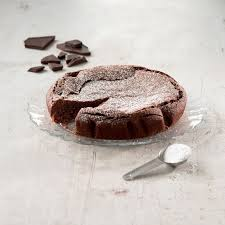

Mudcake

Description
Mudcake is a good and easy-to-make cake!
Ingredients
- Flour
- Cocoa powder
- Baking powder
- Baking soda
- Salt
- Water
- Unsalted butter
- Milk
- Eggs
- Sugar
- Dark chocolate
- Coffeepowder
- Oil
- Chocolate ganche
Instructions
- Preheat oven to 150 degree C. Line the base and sides of
a 20 cm deep round pan with parchment paper. Make sure the
parchment comes above the pan, since it will rise so much.
- Now time to make the batter. Take water in a sauce pan,
Add in coffee, butter, dark chocolate and heat it gently
till it is melted. Add in sugar and whisk well till it is
completely melted.
Pour this in a bowl and set aside to cool down a bit.
- Now sieve flour, cocoa, baking soda, b
aking powder and salt. Set aside.
- Now add in milk to the cooled chocolate mix, along with oil.
Add in one egg at a time and whisk it well. Add in the sifted flour
mix in and mix well to a smooth batter.
- Pour this in the prepared pan and pop it in
oven for 1.45 hours to 2 hours. Now remove it
from oven and let it cool completely.
- Now un mould from tin and cut the top with a serrated knife.
Spoon the ganache on top and spread on all sides.
Decorate as you wish.
Chill in fridge for couple of hours. Serve.
Home